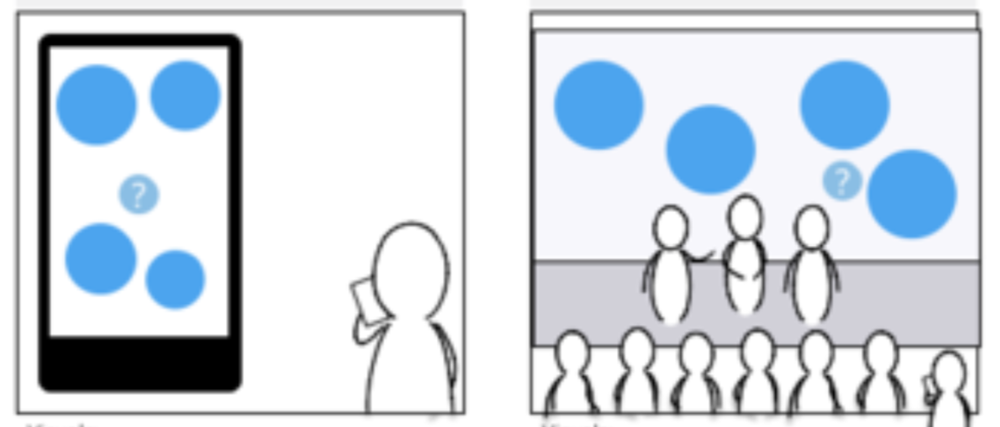

General Electric AAF Conference Experience
Designed and built a system connected to GE’s Artificial Intelligence API in one month. The experience includes a large screen visualization, a responsive mobile site used by 10k conference attendees, and two administrator interfaces to control the system.
Team: me, backend engineer, designer
Collaborated with: GE UX lead & engineers
Timeline: 4 weeks from concept to conference-ready
General Electric came to us with an urgent request for their AAF conference that was a month away. One of the executives wanted to highlight the power of GE’s Artificial Intelligence engine in a interactive, interesting way. Their design and engineering teams were strapped didn’t have the bandwidth to take on the project. It was up to us to deliver a fantastic experience - how would we communicate this story to conference attendees?
As the project lead, I facilitated a kickoff meeting with the client and set up a timeline and regular MWF stand-ups. They had a concept in mind, but no designs or user flows. The vision: a mobile experience where attendees can submit questions, connected to a matching visualization that would be projected onto a large screen behind the speaker.
*Image from General Electric
I partnered with an external backend developer, Jeff Shiau, and together we decided to use React, Redux, and Node.js technologies. Jeff has extensive experience in Node.js and React; and because we were under a short deadline, these frameworks were our best bet to be able to deliver on time.
With Jeff’s help, I tackled the challenge of learning React/Redux basics in a few days. We hit the ground running by planning the system architecture and data structures. The Artificial Intelligence API endpoints were not built out yet, so we mocked up fake data to expedite our process.
{kind=link}
One of the biggest challenges we faced was the lack of design direction and not having enough time to do visual design before building the application. However, this was the perfect opportunity for me to refine our designing in code process.
I designed directly in CSS, making modifications as I coded the animations. At each standup, I would receive feedback from the GE team and iterate the visuals to their liking. We started with a dark blue theme that then transformed into softer blues, then green, and finally the team was satisfied with a sci-fi, futuristic, Tron-inspired color scheme.
The animations I coded were focused on the “question bubbles” spinning, growing in size, flashing, and collision detection.
Because we were under a time crunch, I pulled in two EchoUser designers to assist with styling the administrator UIs, also directly in CSS. This was a fantastic experience in teaching non-technical teammates how to quickly be effective in a new framework. They were familiar with HTML and CSS, but had no exposure to React; so I walked them through the component structure and explained where to edit CSS code.